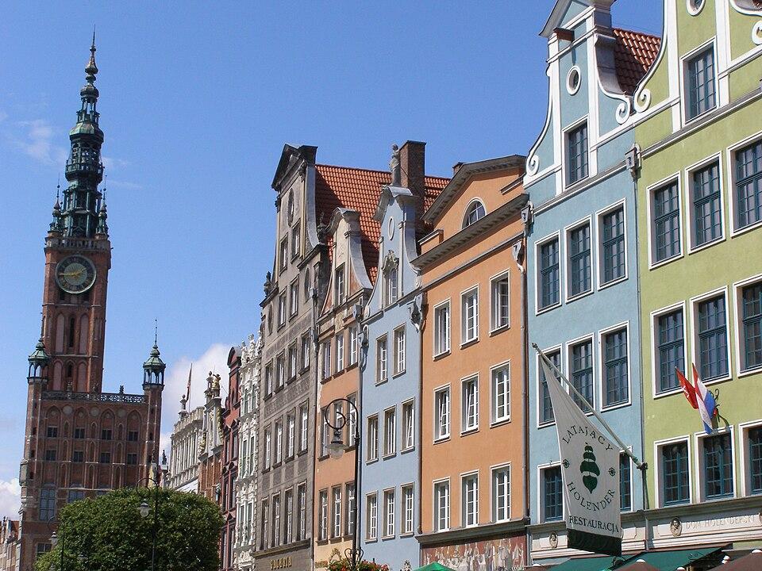
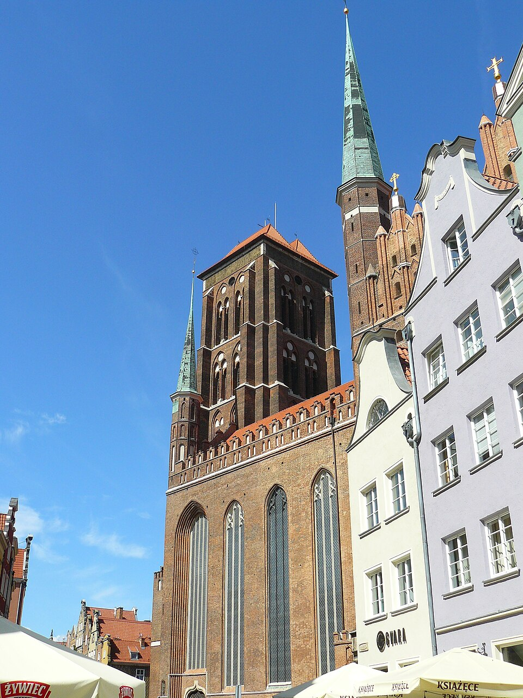
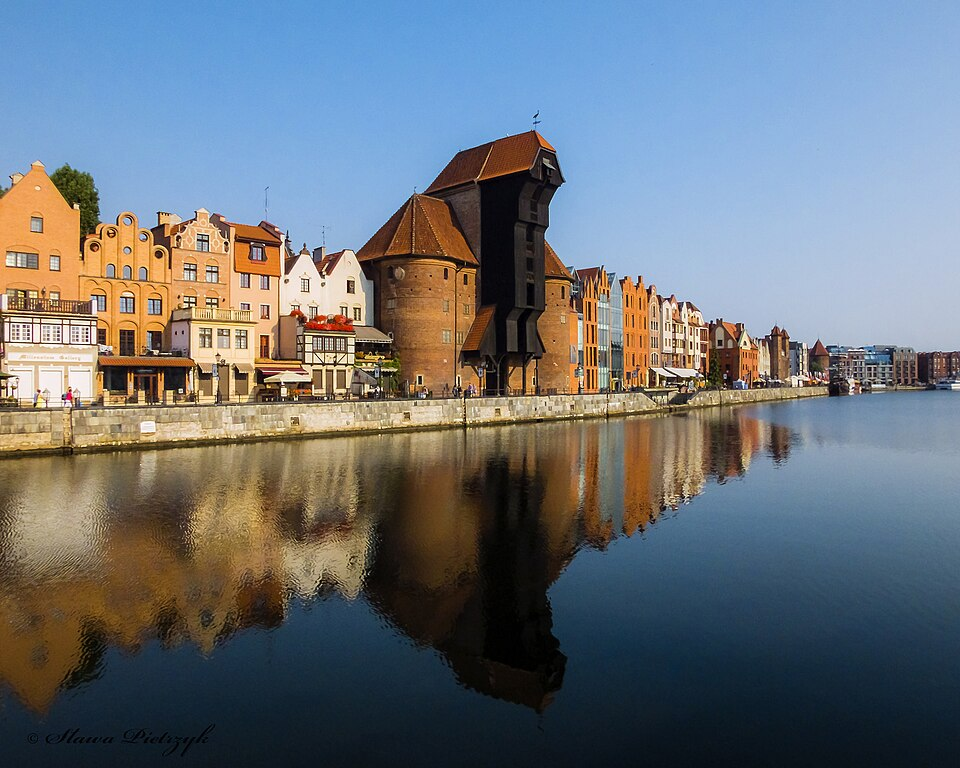
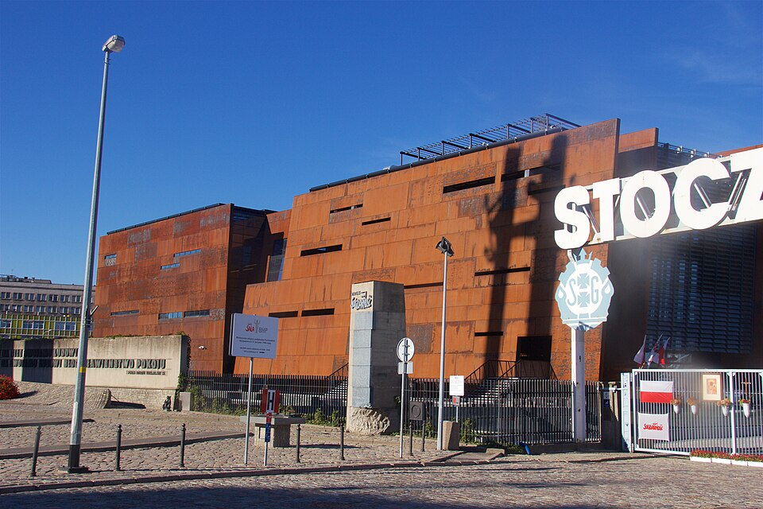
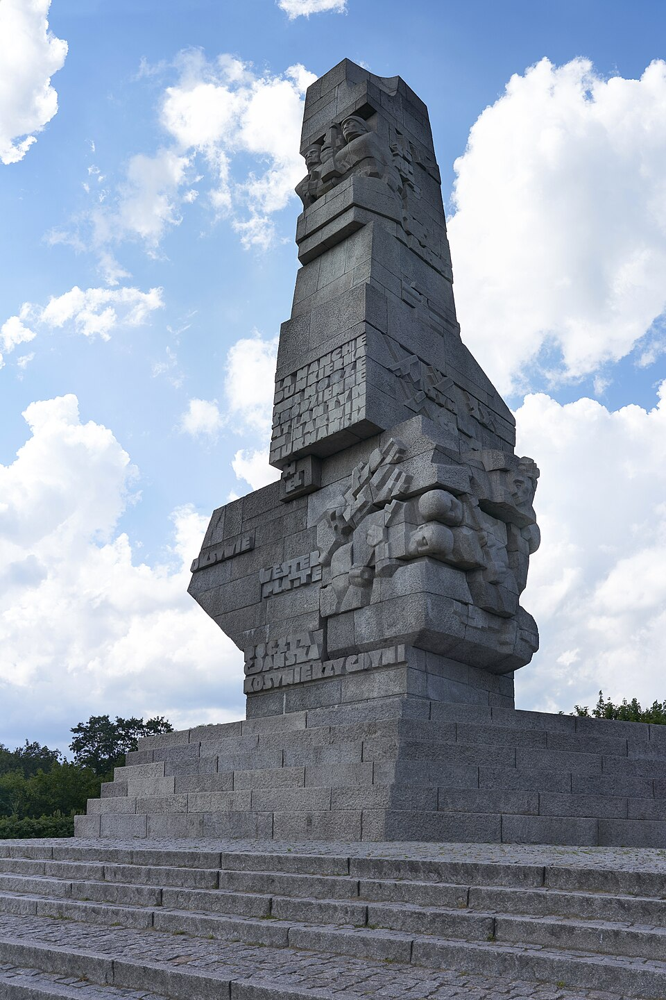
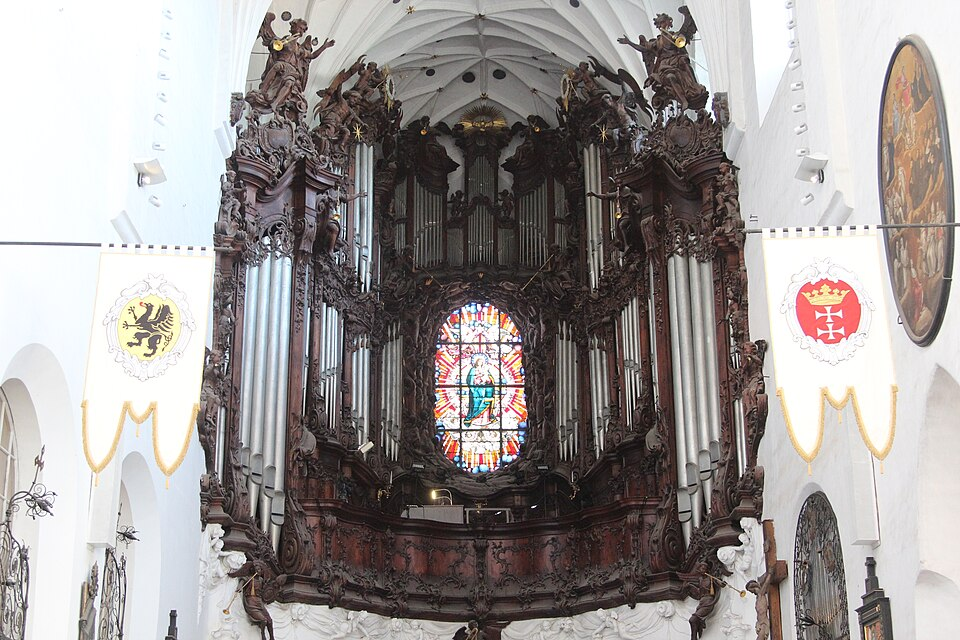

01Dlugi Targ i Dwor Artusa
Reprezentacyjna ulica kupieckiego miasta. Odbudowana po 1945 roku z ocalalych detali i dawnych rycin.
Fot. Andrzej Otrębski, CC BY-SA 4.0
Miasta · 02 z 12
Port, ktory przez tysiac lat nalezal do kilku panstw. Tu zaczela sie wojna i tu skonczyl sie komunizm.
Szesc rozdzialow · okolo osmiu minut
Port, ktory przez tysiac lat nalezal do kilku panstw i kilka razy zostal zbudowany od nowa. Tu w 1939 roku padly pierwsze strzaly drugiej wojny swiatowej, a w 1980 zaczal sie strajk, ktory skonczyl blok wschodni.
Jesli masz zobaczyc jedno miasto na polnocy, to jest to. Stare Miasto wyglada na sredniowieczne, ale w wiekszosci ma siedemdziesiat lat: odbudowano je po zniszczeniach z 1945 roku. Ta jedna informacja zmienia to, na co patrzysz.
Trzy godziny pociagiem z Warszawy. Razem z Sopotem i Gdynia tworzy Trojmiasto.
Pierwsza wzmianka o grodzie, przy okazji misji swietego Wojciecha.
Krzyzacy zajmuja miasto. Poczatek sporu, ktory wraca przez nastepne stulecia.
Miasto w Koronie, z wlasnym prawem i wlasna flota. Bogacenie sie na zbozu splywajacym Wisla.
Zabor pruski. Przez 125 lat miasto nazywa sie Danzig.
Wolne Miasto Gdansk: osobny twor pod opieka Ligi Narodow, ani Polska, ani Niemcy.
Pancernik Schleswig-Holstein ostrzeliwuje Westerplatte. Zaloga broni sie siedem dni.
Miasto zniszczone w ogromnej czesci. Po wojnie odbudowa Glownego Miasta z obrazow i planow.
Strajk w Stoczni Gdanskiej. Z niego wychodzi Solidarnosc.
Opowiesc mowi, ze z fontanny trysnal kiedys goldwasser. Zlote platki w tym likierze sa prawdziwe, fontanna nigdy ich nie lala.
Skladnica miala bronic sie dwanascie godzin. Wytrzymala od 1 do 7 wrzesnia 1939 roku.
Obie odpowiedzi sa falszywe. Miasto bylo krzyzackie, polskie, pruskie, wolne i znow polskie, a jego mieszkancy zmieniali sie razem z granicami.

01Reprezentacyjna ulica kupieckiego miasta. Odbudowana po 1945 roku z ocalalych detali i dawnych rycin.
Fot. Andrzej Otrębski, CC BY-SA 4.0
4 min pieszo

02Jedna z najwiekszych ceglanych swiatyn na swiecie. Na wieze prowadzi 405 stopni.
Fot. Qkiel, CC BY-SA 4.0
6 min pieszo

03Sredniowieczny dzwig portowy, napedzany ludzmi chodzacymi w drewnianych kolach.
Fot. Sława Pietrzyk, CC BY 3.0
20 min pieszo lub tramwaj

04Muzeum przy bramie stoczni, w budynku z rdzawej blachy. Najwazniejszy punkt dnia, jesli chcesz zrozumiec wspolczesna Polske.
Fot. Mike Peel, CC BY-SA 4.0
45 min statkiem

05Miejsce pierwszych strzalow wojny. W sezonie doplyniesz tu statkiem z Dlugiego Pobrzeza.
Fot. Virtual-Pano, CC BY-SA 4.0
tramwaj, 25 min

06Organy daja krotki koncert kilka razy dziennie. Dobra druga polowa dnia albo poczatek dnia drugiego.
Fot. Fallaner, CC BY-SA 4.0
Zakladka w przygotowaniu
Tu stana zdjecia archiwalne z tych samych miejsc: Dlugi Targ przed 1945 rokiem, miasto w gruzach, odbudowa lat piecdziesiatych. Wikimedia Commons nie ma ich w uzywalnej jakosci, wiec zrodlem beda Narodowe Archiwum Cyfrowe i Polona, a kazde zdjecie wymaga osobnego sprawdzenia warunkow uzycia, zanim trafi na strone.
Dla miasta, dla ktorego takich zdjec nie ma albo nie da sie ich uzyc legalnie, ta zakladka po prostu sie nie pojawia.